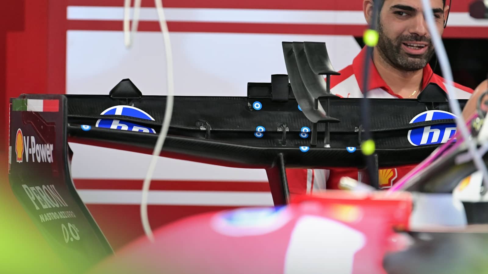
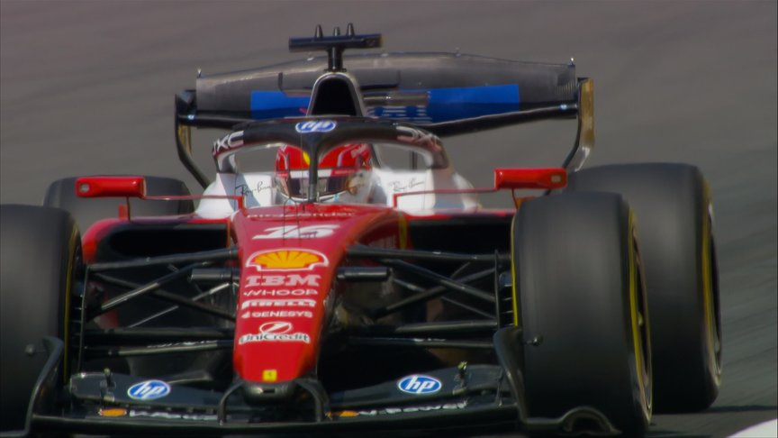

Five parts. Several angry team principals. Now on Etzi.
DRS Actuator | Brabham Fan | F2002 Chassis | McLaren Pedal | Macarena Wing
R 480 000
Demo stock available: 1 item

Ferrari SF-26 rear-wing element inverted during Bahrain testing, 2026. Image: Formula 1. Picture source.

Ferrari's later Hungary 2026 rear-wing assembly in its garage configuration. Photo: Tomasz Mroz / PAP. Picture source.

Leclerc's SF-26 in Shanghai with its rotating wing behind the cockpit; whole-car context. Image: Formula 1 / F1 broadcast. Picture source.
Ferrari introduced a rotating rear-wing element for its 2026 car. Nicknamed the "Macarena" or "flip-flop" wing, the element turns upside down in straight-line mode.
The flipped position creates a larger gap for airflow and reduces drag. This is a 2026 active-aero concept, giving our collection a modern counterpart to its historic fan and brake pedal.
Read the technical background.
| Information | Details |
|---|---|
| Team | Scuderia Ferrari |
| Car | SF-26 |
| Year | 2026 |
| System | Active-aero rotating rear-wing element |
| Nickname | Macarena / flip-flop wing |
| Purpose | Reduces drag in straight-line mode |
| Product code (demo) | ETZI-005 |
| Price (demo) | R 480 000 |
| Stock (demo) | 1 item |